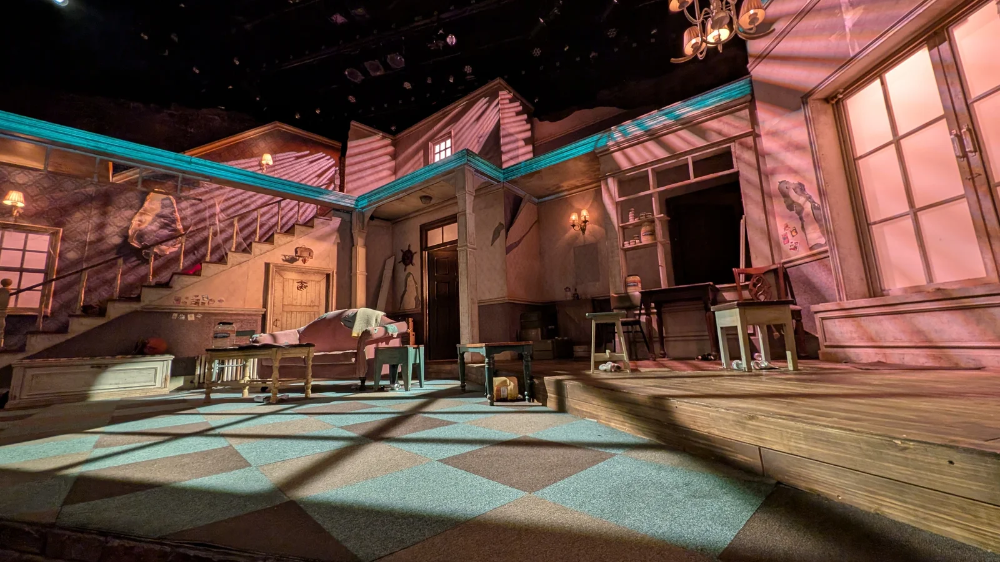

2026 年 5 月 20 日，首爾。時間為韓國當地時間；點照片可以放大。
09:35–10:46
今天要看她了！早上先去走走
第二天，今天要去看文瑾瑩姊姊了！這次就是為了她來韓國的，我真的期待這一天好久了 ^^。不過看戲在下午，早上還有時間，就先去景福宮附近走走。
出門在下雨，還是搭地鐵出發 XD。從誠信女大入口站搭車，中間轉一下，到景福宮站再走出去。今天就從這裡開始逛。


我在宮門、廣場附近晃了一圈，又沿著外面的石牆繼續走。旁邊還有樹和小路可以逛，所以也沒急著離開，後來又走進附近的巷子。
這段我也拍超多照片 XDD。同一個地方，換個角度又拍一張，自拍也不只一張。回來整理才發現，欸，我還沒去看戲，就已經拍成這樣了。


10:50–11:20
走了一早上，先喝杯咖啡 XD
從景福宮附近走過來，接著就鑽進小巷子裡。這裡有老房子，也有小店，跟剛剛那個大廣場差滿多的，我就繼續沿著巷子逛。
經過小院子、看看店門口，再往前走一點。早上大部分時間都在外面晃，後來才找間咖啡店坐下來。


我的位子在窗邊，外面還看得到屋瓦和磚牆。點了杯咖啡，放在窗前又開始拍 XDD。對，連一杯咖啡我也可以拍好幾張。
坐一下，讓腳休息一下。午餐已經有想去的地方了，就是我自己查到的通仁市場。那裡可以玩銅錢便當，這個我想試試看！


12:08–13:25
拿銅錢買午餐，這個好有趣！
通仁市場是我自己查到的。看到可以拿銅錢去買吃的，然後配成自己的便當，就覺得欸，這個文化好有趣！都來韓國了，想親自玩看看 XD。
到了之後，先換銅錢、拿餐盤，再拿著這兩樣進市場。那些銅錢是做成韓國舊式錢幣樣子的代幣，要找有參加活動的店家，才能拿去換吃的。
平常逛市場，買完一樣就付一次錢嘛。這裡變成拿著餐盤到處挑，這家買一點、那家買一點，最後全都裝在自己的便當裡。光是買午餐的過程就滿好玩的 XDD。


我去的時候觀光客很多，而且不只有外國人，韓國人也有！大家也是拿著餐盤來體驗銅錢便當。原來韓國人自己也會特地來玩這個 XD。
我就拿著銅錢一攤一攤看，想吃的就換一點，再去下一攤繼續挑。平常哪有機會拿這種錢買東西，很有趣欸。午餐要吃什麼，就邊逛邊決定。
選好之後，再回去用餐的地方坐下來吃。這一盤都是自己剛剛逛市場挑的，真的有用銅錢換到一份午餐 ^^。很開心有查到這裡，不然就少了這個體驗。
吃完就要往惠化去了。好，接下來才是我這次來韓國最想做的事——看文瑾瑩姊姊！

14:02–18:16
終於，真的看到她本人了 ^^
下午到惠化，來 TOM 劇場看《孤兒》。先看今天的演員名單，再進去找位子。我的座位離舞台很近，等一下就可以在這裡看她演戲了！
她是我從小就愛的演員，中間有好幾年休影。這次會來韓國，就是為了看她。現在真的坐在劇場裡了，我真的真的好開心，終於在今年看到本人 ^^


但先說，我其實聽不懂韓文 XDD。有事先了解這部舞台劇的劇情啦，不是什麼都不知道就跑來看。
可是她在台上的表情，還有那個情感張力，真的會讓人跟著她的情緒走。我明明聽不懂韓文，還是在現場掉淚了，好感動。
知道劇情是一回事，親眼看到她演又是另一回事。真的很開心自己有來，也很開心她又回來演戲了。能坐在台下看她，這趟就好值得 ^^
看完當然要在舞台前拍照啊 XDD。笑著拍、比耶再拍，終於看到從小喜歡的演員，這個一定要留個紀念。


19:01–20:46
只有一個人，也要吃烤肉啦 XD
看完戲想吃烤肉，可是問題來了，我只有一個人欸。後來發現原來有專門的一人烤肉店，這不就剛好嗎 XD。於是就來 Hongojib 了。
坐下來，面前就是自己的小烤爐，旁邊放肉、小菜、飯和湯，我還點了啤酒。一個人也可以這樣吃烤肉，早知道有這種店，就不用想那麼多了 XDD。
肉上來就自己放上去烤，配著飯和小菜慢慢吃。想吃烤肉這件事解決了，而且不用揪人。以後自己來韓國，知道還有這種選擇就很好。


吃完還沒結束，我又跑去 Sulbing 吃雪冰 XDD。烤肉吃到了，甜的也想吃，所以又坐下來吃了一碗。
這個晚上還滿忙的，先烤肉，再雪冰，吃完還有地方想去。還沒要回去啦，接下來去找韓劇裡的場景！


22:33–23:17
來找白馬那一幕，結果雨夜也好美
吃完雪冰，又跑來光化門廣場。就是《The King：永遠的君主》裡，李敏鎬騎著白馬的那一段啦！看劇的時候記住了，來韓國就想來這裡走走 XD。
到了李舜臣將軍銅像這邊，又拍了好幾張，直的、橫的都要 XDD。想找的廣場走到了，接著再去清溪川。都這個時間了，我還在外面逛。


但下雨天的清溪川真的很美欸。地上濕濕的，燈光會映在上面，河上又掛了好多彩色燈籠。走到橋邊往下看，又想停下來拍。
那時候已經晚上十點多了，我還是繼續走，也拍了自拍，還錄了這段影片。回來再看，水跟燈光都還在動，就又想起那個晚上，真的很喜歡。
不過鞋子濕掉也是真的 XDDD。夜景很美，鞋子還是得想辦法弄乾，不然明天怎麼繼續走。這就是下雨天出門一起附送的問題啦。
結果十一點多才去搭地鐵。第二天從早上出門，一路逛到這麼晚，今天真的好滿，也真的好開心 ^^
後來 5/25 把這段影片 PO 到 IG，我寫了一句話：
城市很喧鬧，但這一刻，心很安靜。
Zero · IG 分享於